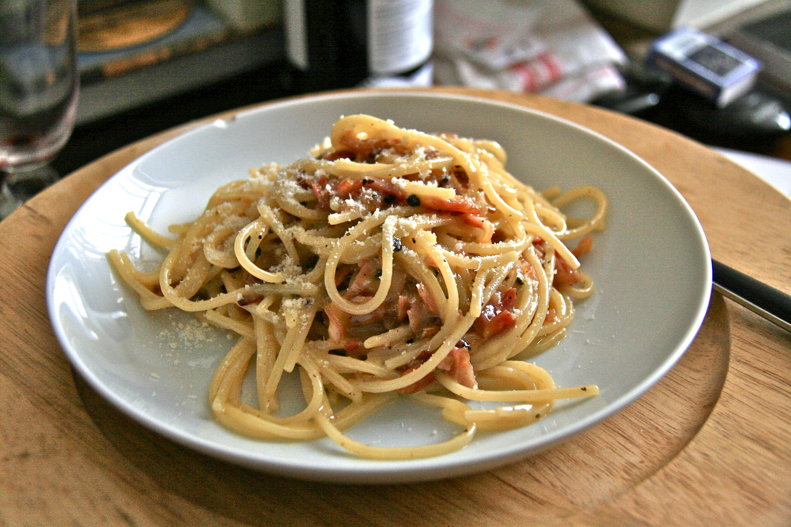

Carbonara

Descripción
La auténtica salsa carbonara italiana se elabora solo con huevo, queso pecorino o parmesano, guanciale o panceta y pimienta, sin nata. Su origen es incierto, pero hoy es una de las salsas de pasta más famosas y tradicionales del mundo.
Ingredientes
- 400 g de guanciale (en su defecto panceta o bacon)
- 6 huevos camperos
- 150 g de queso pecorino (o parmesano, o mitad y mitad)
- Pimienta negra recién molida
- 400 g de pasta
- Sal
Preparación
- Cortar el guanciale en tiras o cuadraditos y dorarlo en una sartén a fuego medio
- Separar las yemas de 4 huevos y ponerlas en un bol con 2 huevos enteros
- Incorporar el queso pecorino rallado y pimienta negra recién molida
- Mezclar con cuidado de no incorporar aire y reservar
- Cocer la pasta al dente, reservar 1 cacito del agua de cocción y escurrir la pasta
- Incorporar la mezcla de huevos y queso a la pasta junto con el guanciale, un par de cucharadas de su grasa y ligar poco a poco con el agua de cocción
- Servir espolvoreada con más queso rallado y un poco más de pimienta por encima
Home Page